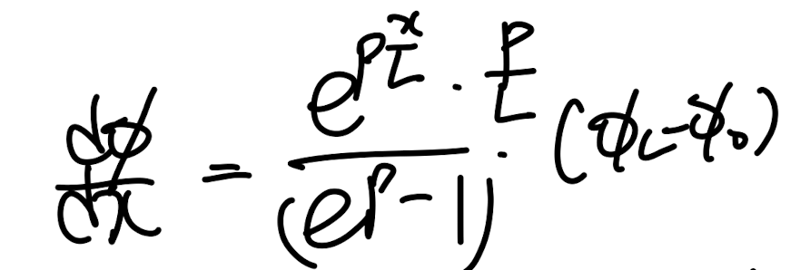
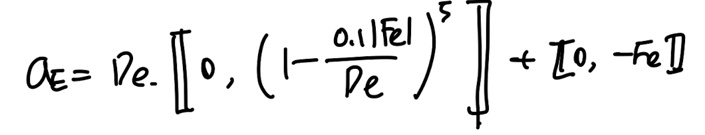

Ch5 Convection and Diffusion - part3 (Expotential, hybrid scheme)
(Part1 내용) general transport equation에서
Convection term을 algebriac form으로 바꾸기 위해 profile을 정해야했고,
그 과정에서 linear, stepwise profile이 제시되었다.
(part2내용) exact solution을 구해서 각각의 profile과 비교한 결과
linear profile(D >>F case, diffusion dominant),
Step wise profile(F>>D case, Convection dominatn).
Pecelt number = F/D 에 따라서 알맞는 profile이 달랐다.
따라서, 우리는 위 두 scheme을 합친 하나의 scheme으로 나타내보자.
Expotential Scheme
다시 짚고 넘어가자, 우리가 풀고자 하는 미분 방정식은 1번과 같다.

1D Steady Convection Diffusion Equation
여기서 새로운 개념을 정의하자, Total flux는 Convection Flux, Diffusion flux로 구성.

자세히 살펴보면 6번식을 dx로 미분하면 1번식이 된다. 따라서, e,w에서 Total flux가 같다는 8번식이 도출된다.

표기상 7번 식 = 1번식 입니다. 우리가 풀려고 하는 differential Eq.
6번식 J를 이제 x = e,w에서 구하기 위해서 part2에서 구했던 1번식의
exact solution을 이용하자.

exact solution of Eq1.
J를 구하기 위해서는 6번식에 d
Φ
/dx 가 존재하므로 x에 대해 미분해주자.

구한 Φ, d
Φ/dx를 6번 total flux식에 대입해주면 다음과 같다.

여기서 이제 우리는 o,L을 우리의 control volume에 맞게 설정해주면

O -> P, L ->E로 설정하면 Je식이 도출.
9번식이 도출된다.

같은 방식으로 마지막에
O -> W, L ->P로 설정하면 J_w식이 도출.

이를 이제 Algebriac form으로 바꾸어 주면 계수들이 다음과 같다.

위 algebraic이 어느 다른 scheme보다 정확하다고 할 수 있다.
정왜냐? exact solution 으로 만들었으니까.
하지만 당여닣 expotential 항이 들어가니 계산 연산이 늘어나는 것은 사실이므로,
이후에 위 방식 base + simplify한 scheme이 등장한다. 바로, hybrid scheme.
Hybrid Scheme
Expotential scheme에서 마지막에 구한 계수 a_E를 살펴보자.

exact solution based coefficient a_E
ae/De를 Pecelt number에 다른 함수로 그려보면 아래와 같다.

즉 위의 그래프가 바로 exact solution이지만, 계산연산이 많으므로
3구간으로 나눈후 linear function을 각 구간에 대해 정의한 것이 바로.
hybrid shceme.

특징 바로 - inf, + inf일때 위. 함수가 결국 좌우구간으로 설정한 직선함수로 수렴한다는 것이다.
그리고 그 두 직선함수를 잇기 위해서 Pe = 0 에서 접하는 직선으로 이어준 것.

구간으로 나누어 정의한 a_E를 이제 하나의 기호로 표현하면 다음과 같다.

같은 방식을 a_W로 똑같이 진행해보면, 우리가 최종적으로 유도하는 algebriac eq은 다음과 같다.

당연히 expotential scheme보다 부정확하지만,
연산속도는 훨씬 절감된 방식이다.
여기서 hybrid 보다는 expotnetial scheme과 잘 맞음과 동시에,
연산속도는 expotential 보다 작은
hybrid and expotential 사이에있는 scheme을
마지막으로 살펴보자.
PowerLaw Scheme
간단하다, 우리가 exact solution 으로 제작한 expotential form과 최대한 비슷한 함수를 만들면 된다.
연산을 절약하기 위해서 hybrid scheme에서는 constant, linear function을 사용하였다면,
powerlaw scheme에서는
거듭제곱함수(power law function)
을 사용하는 것이다.
구간은 Pe = -10, 0, 10 을 기준으로 하여 4구간으로 총 나누어 다음 그래프로 표현한다.

정확한 구간별 a_E/De 를 Peclet number로 나눈 구간함수는 다음과 같다.

수학의 마술로, 한줄로 위. 4 구간함수를 표현가능하다.

지금까지 살펴본 내용을 정리해보면,
Central difference shceme
은 발산 >> 대류일때만 알맞고,
Upwind scheme
은 대류 >> 발산일때만 맞았다.
이에 exact solution으로 유도한 (즉, 모든 상황에서 알맞는)
Expoential scheme
을 살펴보았다.
하지만, 연산이 굉장히 오래걸리기 때문에 expotential scheme과 비슷하지만
이를 구간으로 나누어 단순화한
hybrid scheme
(constant, linear functions 으로 )
powerlaw scheme
(constant, linear and power law functions 으로 )
expotential function을 표현한
두가지를 방식을 살펴보았다.
종합적으로 위의 모든 scheme을 한가지 표현으로 정리할 수가 있고 이를 다음 포스터에서 살펴보자.